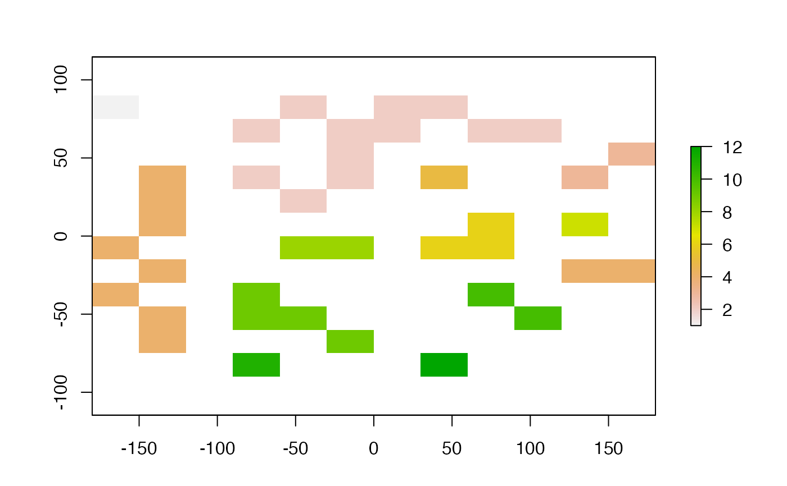

clump.RdDetect clumps (patches) of connected cells. Each clump gets a unique ID. NA and zero are used as background values (i.e. these values are used to separate clumps). You can use queen's or rook's case, using the directions argument. For larger files that are processed in chunks, the highest clump number is not necessarily equal to the number of clumps (unless you use argument gaps=FALSE).
# S4 method for RasterLayer
clump(x, filename="", directions=8, gaps=TRUE, ...)RasterLayer
Character. Filename for the output RasterLayer (optional)
Integer. Which cells are considered adjacent? Should be 8 (Queen's case) or 4 (Rook's case)
Logical. If TRUE (the default), there may be 'gaps' in the chunk numbers (e.g. you may have clumps with IDs 1, 2, 3 and 5, but not 4). If it is FALSE, these numbers will be recoded from 1 to n (4 in this example)
Additional arguments as for writeRaster
This function requires that the igraph package is available.
RasterLayer
r <- raster(ncols=12, nrows=12)
set.seed(0)
values(r) <- round(runif(ncell(r))*0.7 )
rc <- clump(r)
#> Loading required namespace: igraph
freq(rc)
#> value count
#> [1,] 1 1
#> [2,] 2 12
#> [3,] 3 2
#> [4,] 4 10
#> [5,] 5 1
#> [6,] 6 3
#> [7,] 7 1
#> [8,] 8 2
#> [9,] 9 4
#> [10,] 10 2
#> [11,] 11 1
#> [12,] 12 1
#> [13,] NA 104
plot(rc)
